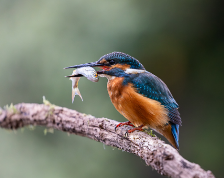

Gallery & Specimens
Field captures & species observation
 Land
Land
European Robin
Gardens & Urban

WaterCommon Kingfisher
Lakes & Rivers
 Forest
Forest
Scarlet Macaw
Jungle Canopy
 Land
Land
House Sparrow
Fields & Towns
 Forest
Forest
Barn Owl
Woodlands
 Water
Water
Mute Swan
Lakes & Estuaries